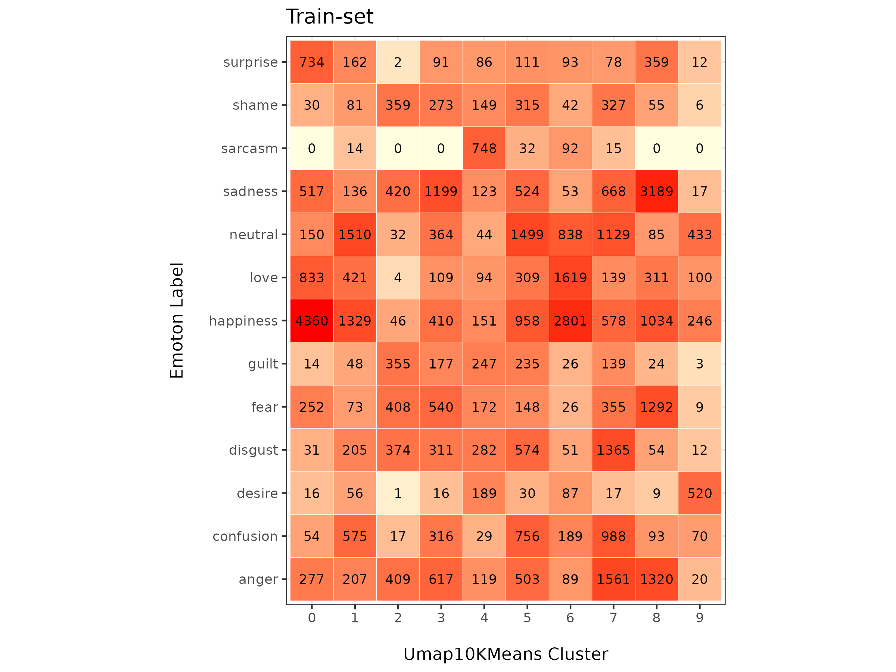
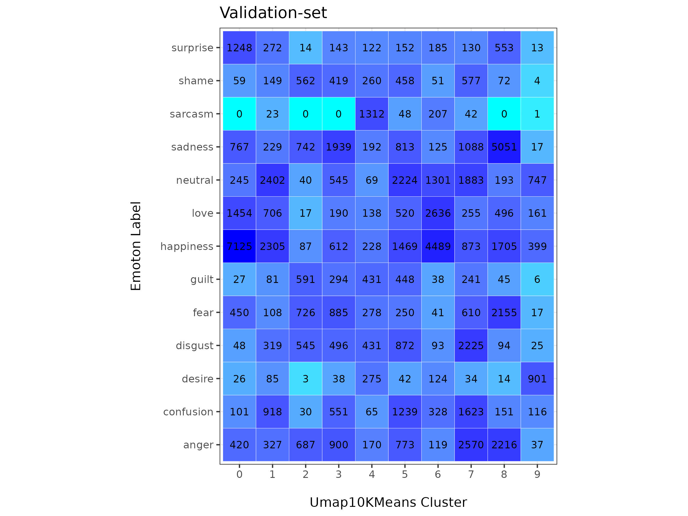
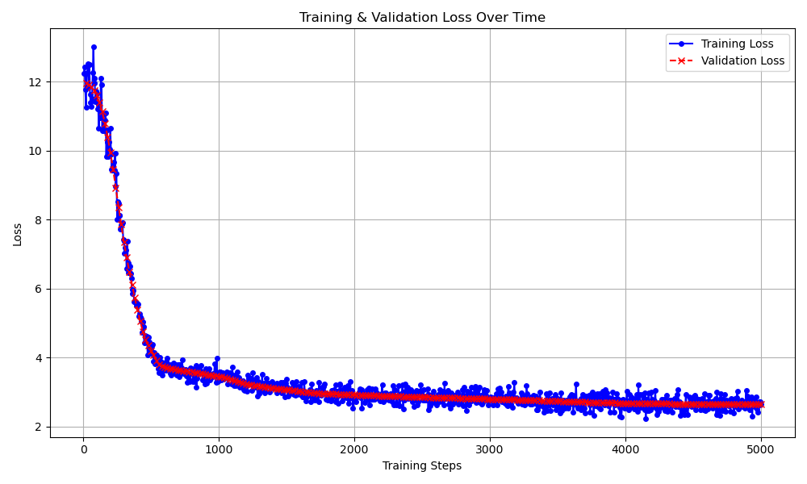
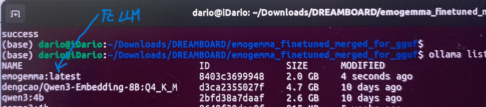

DoE
Quando si parla di Design of Experiment (DoE), di solito pensiamo a un metodo statistico per pianificare esperimenti. L'idea è semplice: vogliamo capire come diverse variabili (o fattori) influenzano un certo risultato (o risposta), cercando di ottenere il massimo delle informazioni con il minor numero di prove e garantendo che i nostri risultati siano validi ed efficienti.
Tuttavia, nel contesto di questo tutorial, il DoE assume una sfumatura un po' diversa. Non stiamo progettando un esperimento per testare direttamente l'impatto di alcune variabili su un modello. Invece, stiamo applicando i principi del DoE per definire con cura il dataset (il "trainset") che useremo. Questo trainset sarà fondamentale per due scopi:
- Predisporre il fine-tuning di un Large Language Model (LLM).
- Addestrare i modelli di AI tradizionale.
Il nostro obiettivo qui è chiaro: selezionare un sottoinsieme di osservazioni che sia il più rappresentativo, bilanciato e informato possibile, massimizzando l'efficacia del fine-tuning.
Perché la scelta del Trainset è cruciale?
Il codice seleziona un trainset relativamente piccolo, appena 50.000 frasi.
Questa non è una scelta casuale! Primo, vogliamo esplorare un aspetto fondamentale della recente letteratura sugli LLM: l'idea che il fine-tuning di un modello pre-addestrato possa essere incredibilmente efficace anche con un numero limitato di esempi. Molti studi suggeriscono che non sempre servono milioni di dati per adattare un LLM a un task specifico. Il nostro obiettivo è proprio verificare questa ipotesi, testando la capacità di generalizzazione del nostro LLM con un trainset più contenuto, ma strategicamente selezionato.
Oltre alla dimensione, la scelta di un trainset bilanciato è di importanza critica. Immaginate di voler insegnare a un bambino a riconoscere gli animali. Se gli mostraste solo gatti, il bambino diventerebbe un "esperto" di gatti, ma farebbe fatica a riconoscere un cane o un uccello. Allo stesso modo, un dataset sbilanciato – dove alcune categorie (come certe emozioni o argomenti) sono sovra-rappresentate – porterebbe l'LLM a:
- Sovra-apprendere le categorie più frequenti, diventando troppo specializzato su quelle.
- Sotto-stimare o addirittura ignorare le categorie meno comuni, che potrebbero però essere altrettanto importanti per i nostri obiettivi.
Un trainset bilanciato, al contrario, assicura che il modello sia esposto a tutte le sfumature e varietà presenti nei dati. Questo lo rende più robusto e capace di generalizzare bene anche su osservazioni che non rientrano nelle categorie più comuni o che rappresentano casi di "nicchia".
Per raggiungere questo bilanciamento, abbiamo deciso di selezionare il trainset tramite un campionamento casuale pesato. Ogni frase riceve una probabilità di essere inclusa nel trainset in base a due fattori cruciali: le tipologie di emozioni (Label) e la varietà degli Embeddings (Umap10KMeans), che sono cluster basati sulla vicinanza semantica delle frasi, prodotti durante la fase di analisi esplorativa dei dati (EDA).
Il "peso", o la probabilità di selezione di una frase, è calcolato in modo da bilanciare la combinazione {Tipo di Emozione ; Tipo/Cluster di Embeddings}. In altre parole, diamo una maggiore probabilità di selezione alle frasi che appartengono a combinazioni meno rappresentate naturalmente nel dataset. Questo assicura che ogni "cella" (ogni combinazione unica di Label e Umap10KMeans) sia equamente rappresentata nel trainset finale, garantendo che l'LLM apprenda in modo più completo e meno distorto.
Ma c'è un altro aspetto fondamentale per garantire una valutazione affidabile: la creazione del validation set. Per i gruppi di frasi con più di 40 osservazioni (definite dalla combinazione "Label" e "Umap10KMeans"), abbiamo garantito che almeno 20 di queste frasi non vengano mai incluse nel trainset. Queste osservazioni sono esplicitamente riservate per il validation set. Questa strategia è cruciale perché assicura che anche le categorie più popolose siano rappresentate in modo significativo nel set di test, permettendoci di valutare l'accuratezza del modello su una varietà di esempi che non ha mai visto durante l'addestramento, anche quelli più comuni.
Trainset e Validation Set Finali
Una volta selezionate le 50.000 frasi che costituiscono il nostro trainset, le restanti 81.306 frasi formeranno il nostro validation set. Questo set sarà utilizzato per misurare l'accuratezza e la capacità di generalizzazione degli algoritmi di Gen-AI o "tradizionali" che andremo a sviluppare, fornendo una valutazione imparziale delle loro performance su esempi non disponibili per l'addestramento.
Trainset

Validationset

Perchè Gemma3
In questo tutorial, il fine-tuning verrà eseguito utilizzando il modello pre-trained Gemma 3 1b it, un LLM messo a disposizione da Google e caratterizzato da "solo" un miliardo di parametri (1b). Per fare una comparazione si stima che ChatGPT 4, sviluppato da OpenAI, abbia tra 1000 e 2000 miliardi di parametri. La nostra decisione di adottare questo modello si basa su una serie di considerazioni strategiche, focalizzate sull'equilibrio tra accessibilità, efficienza e prestazioni.
Quando abbiamo concepito un tutorial che fosse fruibile da un vasto pubblico, la nostra attenzione si è subito rivolta agli Small Large Language Model (SLLM). Questi modelli, caratterizzati da un numero ridotto di parametri, sono progettati per essere altamente efficienti e performanti in compiti specifici, mantenendo al contempo un'elevata coerenza nella generazione del testo. Dopo aver sperimentato diverse opzioni open source disponibili, la famiglia Gemma 3 di Google si è costantemente distinta come una delle più promettenti per la sua notevole capacità di seguire le istruzioni in modo coerente.
Siamo consapevoli che gli LLM, e in particolare gli SLLM, possono essere soggetti a "allucinazioni" o mostrare difficoltà nel comprendere appieno le istruzioni impartite. Per esplorare e mitigare questi limiti, abbiamo condotto un esperimento specifico: abbiamo chiesto a un LLM di sintetizzare una frase o un documento di testo in una singola parola. Sebbene possa apparire un compito semplice, si è rivelato una sfida significativa per l'LLM mantenere la "disciplina" e completarlo correttamente in una sequenza di tentativi.
Questo esperimento si è rivelato estremamente funzionale per diverse ragioni:
-
Ci ha permesso di valutare l'affidabilità di un LLM nella sintesi di informazioni verbali complesse in rappresentazioni concise, che possono essere utilizzate per rappresentazioni di sintesi, come grafici o altre forme di espressione.
-
La capacità di sintetizzare una frase con una singola parola, quando possibile, apre la strada all'utilizzo e allo sfruttamento di ontologie basate sui vocabolari, che mirano a strutturare e organizzare la complessità semantica.
-
Ci consente di riutilizzare modelli di Embeddings non contestualizzati, come Word2Vec o FastText.
Nonostante i vantaggi in termini di efficienza e costi computazionali, è importante riconoscere che gli SLLM come Gemma 3 1b it potrebbero non possedere la stessa profondità di conoscenza o la medesima capacità di gestire compiti estremamente complessi o ambigui rispetto a modelli con un numero di parametri significativamente maggiore. Tuttavia, per il contesto specifico di questo tutorial, focalizzato sulla classificazione delle emozioni, i benefici derivanti dall'efficienza e dall'accessibilità di Gemma 3 1b it superano ampiamente questi compromessi, rendendolo la scelta ottimale per dimostrare l'efficacia del fine-tuning con risorse limitate.
Un ulteriore elemento cruciale nella scelta di Gemma 3 1b it è la sua natura di modello "instruction tuned" (indicato dal suffisso "it" nel nome). Questo significa che il modello è stato pre-addestrato non solo su un vasto corpus di testo, ma anche specificamente ottimizzato per seguire istruzioni e formati di prompt. Questa caratteristica lo rende particolarmente adatto al fine-tuning per compiti specifici come la classificazione, in quanto è già predisposto a interpretare e rispondere a istruzioni ben definite, facilitando il processo di adattamento e migliorando le prestazioni sul dataset target.

Una panoramica su questo modello è stata messa a disposizione da Google stessa. Qui il Technical Report.
Fine-tuning
Il codice implementa un processo di fine-tuning di un LLM, nello specifico Gemma 3 1b it, specializzandosi nella classificazione delle emozioni.
Il fine-tuning rappresenta una metodologia fondamentale nell'ambito dell'apprendimento automatico, in particolare per i Large Language Models (LLM). Si tratta del processo di adattamento di un modello pre-addestrato (pre-trained), che ha già acquisito una vasta comprensione del linguaggio su un corpus di dati generale e di grandi dimensioni, a un dataset più piccolo e specifico per un determinato dominio o compito. Questo approccio consente al modello di specializzarsi e migliorare significativamente le sue prestazioni su quel compito specifico, capitalizzando la conoscenza generale precedentemente acquisita ("Transfer Learning").
La rilevanza del fine-tuning deriva dalla sua capacità di bilanciare l'efficienza computazionale con la specificità del compito. Addestrare un modello di grandi dimensioni da zero è un'impresa che richiede risorse computazionali ingenti e tempi prolungati, spesso proibitivi per la maggior parte delle organizzazioni e dei singoli ricercatori. Partendo da una base solida fornita da un modello pre-addestrato, il fine-tuning accelera notevolmente il processo di sviluppo e consente di ottenere prestazioni superiori su dati di nicchia. I modelli pre-addestrati offrono una comprensione universale del linguaggio, e il fine-tuning colma il divario adattando questa conoscenza generale a dataset specifici, spesso di dimensioni ridotte. Questo rende l'elaborazione del linguaggio naturale accessibile e pratica per applicazioni specializzate, massimizzando l'utilità dei foundation models.
Nel nostro caso il fine-tuning specializzerà e migliorerà le prestazioni di Gemma 3 1b it relativamenta alla classificazione delle emozioni a partire da una frase in input.
Esistono diverse strategie per eseguire il fine-tuning, che si differenziano principalmente per la quantità di parametri del modello che vengono aggiornati durante l'addestramento:
-
il "full fine-tuning" implica l'aggiornamento di tutti i pesi e i parametri del modello pretrained, richiedendo significative risorse computazionali (come VRAM e tempi di calcolo) e un dataset di fine-tuning relativamente ampio;
-
al contrario, l'approccio utilizzato nel codice, noto come Parameter-Efficient Fine-Tuning (PEFT), e in particolare la logica LoRA (Low-Rank Adaptation), si concentra sull'addestramento di un numero molto più piccolo di parametri aggiuntivi o modificati, lasciando la maggior parte del modello originale congelata. Questo riduce drasticamente i requisiti di memoria e i tempi di addestramento, rendendo il fine-tuning accessibile anche su hardware meno potente, pur mantenendo prestazioni competitive.
Il codice utilizza LoRA per adattare un modello Gemma 3 1b it, focalizzandosi sull'addestramento di matrici di basso rango che vengono "iniettate" nel modello, consentendo un adattamento efficace senza la necessità di modificare l'intero modello.
Prompting
Per addestrare efficacemente un LLM su un compito specifico come la classificazione delle emozioni, è essenziale presentare i dati al modello in un formato strutturato e coerente. Questa formattazione, spesso definita 'prompt' o 'template', guida il modello su come interpretare l'input e generare l'output desiderato. La funzione formatting_func nel nostro codice è responsabile di trasformare ogni riga del dataset in questo formato specifico.
Una frase e la sua corrispettiva emozione possono essere convertite in un prompt come questo:
Questa struttura indica chiaramente al modello quale parte è l'input (Frase/Sentence) e quale l'output atteso (Emozione/Label). Il tokenizer (caricato insieme al modello) è poi responsabile di convertire questo testo formattato in una sequenza di token numerici che il modello può elaborare.
Vantaggi di questo approccio:
-
Chiara separazione tra input e output: L'uso dei tag
user e model replica un formato di conversazione che molti LLM moderni sono abituati a processare. Questo aiuta il modello a capire chiaramente cosa è l'input (la frase da classificare) e cosa è l'output atteso (l'emozione). -
Identificazione del compito: La frase "Identify emotion:" è una istruzione esplicita che guida il modello verso il compito specifico che deve eseguire. Questo è fondamentale per il fine-tuning.
-
Token di fine sequenza (tokenizer.eos_token): L'aggiunta del tokenizer.eos_token alla fine di ogni esempio è cruciale. Indica al modello che la sequenza corrente è terminata, il che è vitale per l'addestramento e la generazione.
-
Batching: L'uso di batched=True nella funzione .map() è efficiente perché elabora più esempi contemporaneamente, velocizzando la preparazione del dataset.
-
Coerenza delle etichette: Durante l'EDA del dataset ci siamo assicurati che le emozioni categorizzate nella variabile "Label" siano esattamente le stesse (es. sempre "Gioia", mai "gioia" o "felicità" se "Gioia" è la tua etichetta canonica). La coerenza è fondamentale per il modello.
-
Bilanciamento del dataset: Se possibile, è preferibile avere un numero di esempi più o meno equilibrato per ciascuna delle 13 emozioni. Se alcune classi sono sovra-rappresentate e altre sotto-rappresentate, il modello potrebbe diventare bravo a predire le classi più comuni e meno bravo con quelle rare.
-
Varietà nelle frasi: E' preferibile che le frasi all'interno di ciascuna categoria di emozione siano varie e coprano diverse sfumature e modi di esprimere quell'emozione. Questo è il motivo che ci ha portato a rappresentare il training set non solo per tipologia di emozione, ma anche per cluster di Embeddings.
Presetting
Per accedere a Gemma 3 1b it, è necessario iscriversi ad Hugging Face e sottoscrivere un contratto d'utilizzo con Google. Una volta sottoscritto è auspicabile salvare una versione locale del modello pretrained per generare l'LLM-fintened
Training
Il processo di training per batch, in questo codice Python, utilizzando transformers.Trainer (o nello specifico trl.SFTTrainer che lo estende) e le ottimizzazioni di Unsloth, funziona come segue:
1. Preparazione del Dataset e Prompting
Caricamento e Split: Il codice carica il trainset (emotions_dataset_doe.parquet) e lo suddivide a sua volta in un set di training e un set di validazione (90% training, 10% validation).
Prompting (formatting_func): Ogni esempio (definito dalla coppia "Sentence" e "Label") viene trasformato in un formato adatto al fine-tuning di un LLM per compiti di tipo "instruction-following":
Tokenizzazione implicita: Sebbene non ci sia una fase esplicita di tokenizer() nel codice dopo formatting_func, SFTTrainer si occupa internamente di tokenizzare il campo dataset_text_field="text" (che contiene le stringhe generate da formatting_func). Il tokenizer divide queste stringhe in ID numerici che il modello può elaborare, aggiungendo anche i token speciali come [CLS], [SEP], [PAD] (se necessari) e gestendo la massima lunghezza della sequenza (MAX_SEQ_LENGTH).
2. Batch nel SFTTrainer
SFTTrainer è progettato per il fine-tuning di LLM per compiti di "Supervised Fine-Tuning" (SFT). Quando si parla di "training per batch", significa che il modello non elabora un singolo esempio alla volta, ma un gruppo di esempi (un "batch").
per_device_train_batch_size=4: Questa impostazione nei TrainingArguments definisce la dimensione del batch che verrà elaborato da ciascuna GPU (o CPU) disponibile. In questo caso, la GPU elaborerà 4 esempi alla volta.
3. Gradient Accumulation (gradient_accumulation_steps=1)
gradient_accumulation_steps=1: Questa è una configurazione cruciale. Indica quante "mini-batch" devono essere accumulate prima di eseguire un'effettiva retropropagazione e un aggiornamento dei pesi del modello.
Se fosse > 1 (es. 4): Il trainer elaborerebbe 4 batch consecutivi, calcolerebbe i gradienti per ciascuno, li sommerebbe (accumulerebbe), e solo dopo il quarto batch eseguirebbe la retropropagazione e l'aggiornamento dei pesi. Questo permette di simulare una dimensione del batch più grande (batch effettivo = per_device_train_batch_size * gradient_accumulation_steps) senza richiedere più VRAM di quanto non serva per un singolo mini-batch.
In questo caso (= 1) non c'è accumulazione. Ogni batch da 4 esempi genererà i suoi gradienti, che verranno immediatamente usati per l'aggiornamento dei pesi del modello. Questo significa che il batch effettivo è semplicemente per_device_train_batch_size * numero_di_GPU. Con una singola GPU, il batch effettivo è di 4 esempi.
4. Training per Batch (Iterazione)
Il processo si svolge in un ciclo di training, passo dopo passo (step), fino a raggiungere max_steps o fino a quando l'early stopping non viene attivato.
Per ogni "step" di training:
-
Selezione del Batch: Il SFTTrainer estrae un batch di per_device_train_batch_size (4 nel tuo caso) esempi dal formatted_train_dataset.
-
Preparazione del Batch:
-
Questi esempi formattati (stringhe) vengono tokenizzati dal tokenizer associato al modello.
- Vengono creati gli input_ids (gli ID numerici dei token), l'attention_mask (per ignorare i token di padding) e, implicitamente, le labels (che sono gli stessi input_ids, ma con un meccanismo di mascheramento per calcolare la loss solo sulle risposte del modello, non sul prompt dell'utente).
-
Il batch viene spostato sulla GPU per l'elaborazione.
-
Forward Pass:
Il batch di input viene passato attraverso il modello (model). Il modello genera le sue predizioni (logits). Contemporaneamente, viene calcolata la loss (Cross-Entropy Loss) confrontando le predizioni del modello con le labels. La loss viene calcolata solo sui token che il modello dovrebbe generare (la parte
- Backward Pass e Calcolo dei Gradienti:
La loss viene retropropagato attraverso il modello. Questo calcola i gradienti per tutti i pesi addestrabili del modello (che, grazie a LoRA, sono solo i pesi degli adapter LoRA).
Grazie a use_gradient_checkpointing=True in LORA_CONFIG, il processo di retropropagazione è ottimizzato per la VRAM. Non tutti gli stati intermedi del forward pass vengono memorizzati, riducendo l'uso di memoria a scapito di un leggero aumento del tempo di calcolo.
-
Aggiornamento dei Pesi (optim="paged_adamw_8bit"):
-
Poiché gradient_accumulation_steps è 1, i gradienti vengono utilizzati immediatamente.
-
L'ottimizzatore paged_adamw_8bit (fornito da bitsandbytes e integrato da Unsloth) prende questi gradienti e aggiorna i pesi LoRA del modello. L'ottimizzatore a 8-bit è un'altra ottimizzazione chiave per ridurre l'uso della VRAM, specialmente con modelli grandi.
-
La learning_rate (2e-5) e la warmup_ratio (0.1) influenzano come la learning rate si evolve durante il training, con un periodo iniziale di "warmup" in cui la learning rate aumenta gradualmente.
-
Logging (logging_steps=5):
Ogni 5 step di training, il trainer registra informazioni come la training loss corrente. Queste informazioni vengono visualizzate nella console e salvate nei log di TensorBoard.
- Valutazione (eval_strategy="steps", eval_steps=20):
Ogni 20 step di training, il trainer sospende brevemente il training, prende un batch dal formatted_eval_dataset e calcola la validation loss su di esso. Questa eval_loss è cruciale per la callback di early stopping.
5. Early Stopping
La CustomEarlyStoppingCallback entra in gioco dopo ogni valutazione.
Monitora la eval_loss. Se la eval_loss corrente è inferiore alla best_loss registrata finora, la best_loss viene aggiornata e il contatore bad_steps viene azzerato.
Se la eval_loss non migliora, bad_steps viene incrementato.
Quando bad_steps raggiunge EARLY_STOPPING_PATIENCE (50 in questo caso), il training viene interrotto prematuramente, salvando il modello che ha prodotto la best_loss.
Tuning dei parametri
Gran parte del tuning dei parametri si può fare impostando eval_strategy="no".
Ogni volta che il Trainer esegue una valutazione, deve interrompere il training, passare al dataset di valutazione, eseguire un forward pass su tutti i batch di valutazione e calcolare la loss/metriche. Questo processo può essere costoso in termini di tempo, specialmente con dataset di valutazione grandi o modelli complessi.
Quando si stanno testando rapidamente diverse configurazioni (ad esempio, batch size, learning rate, ottimizzatori, lunghezza massima della sequenza, ecc.), il tempo di esecuzione di ogni prova è fondamentale. Disabilitare la valutazione rimuove questo overhead, permettendo di vedere i risultati della training loss molto più velocemente.
In fase iniziale di sperimentazione, si è interessati principalmente a vedere se il modello sta apprendendo qualcosa (se la training loss scende) e se il training sta procedendo senza errori o crash. La validation loss diventa rilevante in una fase successiva, quando si cerca di ottimizzare le prestazioni e prevenire l'overfitting.
Framework
Le principali soluzioni utilizzate per rendere questo processo efficiente, soprattutto in termini di tempi di elaborazione e utilizzo della memoria (VRAM), sono le seguenti:

- Unsloth (e tecniche di Efficient Fine-tuning come QLoRA e LoRA): Unsloth è una libreria che ottimizza il processo di fine-tuning degli LLM, rendendolo significativamente più veloce e meno esigente in termini di memoria rispetto alle implementazioni standard. Lo fa attraverso varie ottimizzazioni a basso livello. Come funziona nel codice:
- from unsloth import FastLanguageModel: Importa la classe FastLanguageModel che è la versione ottimizzata di Unsloth per caricare e gestire i modelli.
- load_in_4bit=True: Questo parametro attiva la tecnica QLoRA (Quantized Low-Rank Adaptation). Invece di caricare l'intero modello in precisione floating point completa (es. FP16 o FP32), che richiederebbe molta VRAM, QLoRA lo quantizza a 4 bit. Questo riduce drasticamente l'impronta di memoria del modello base.
- model = FastLanguageModel.get_peft_model(model, **LORA_CONFIG): Questo applica la tecnica LoRA (Low-Rank Adaptation). Invece di addestrare tutti i milioni o miliardi di parametri del modello, LoRA "congela" il modello base quantizzato e aggiunge solo un piccolo numero di "adattatori" (matrici a basso rango) che vengono addestrati. Questi adattatori sono molto più piccoli del modello completo, riducendo enormemente il numero di parametri addestrabili e quindi la VRAM e il tempo di calcolo necessari. La configurazione (LORA_CONFIG) definisce i parametri di LoRA, come r (rango delle matrici) e target_modules (quali parti del modello modificare).
- optim="paged_adamw_8bit": Questo specifica un ottimizzatore "paged" che gestisce meglio la memoria. Parti dello stato dell'ottimizzatore possono essere spostate dalla VRAM alla RAM di sistema quando non sono immediatamente necessarie, liberando così preziosa VRAM per le operazioni di calcolo.
- use_gradient_checkpointing=True: Questa tecnica sacrifica leggermente la velocità di addestramento per un notevole risparmio di VRAM. Durante il forward pass (calcolo delle predizioni), non tutte le attivazioni intermedie vengono memorizzate. Durante il backward pass (calcolo dei gradienti), le attivazioni necessarie vengono ricalcolate al volo, riducendo la memoria occupata.

- Hugging Face Transformers e TRL (Transformer Reinforcement Learning): Librerie fondamentali nell'ecosistema di Hugging Face per lavorare con LLM. Transformers fornisce la struttura per caricare modelli, tokenizer e definire gli argomenti di addestramento (TrainingArguments). TRL è una libreria costruita su Transformers che fornisce strumenti specifici per il fine-tuning di LLM, in particolare per compiti come il Supervised Fine-tuning (SFT) e il Reinforcement Learning from Human Feedback (RLHF). Come funziona nel codice:
- TrainingArguments: Definisce tutti i parametri dell'addestramento, come la dimensione del batch (per_device_train_batch_size), i passi di accumulo del gradiente (gradient_accumulation_steps), il learning rate, il numero massimo di passi, e il salvataggio dei log.
- SFTTrainer: È la classe del trainer fornita da TRL specificamente progettata per il Supervised Fine-tuning. Gestisce il ciclo di addestramento, l'applicazione del tokenizer, l'invio dei dati al modello e il calcolo dei gradienti. Semplifica notevolmente il codice necessario per l'addestramento.
- tokenizer: Il tokenizer è essenziale per convertire il testo (le frasi e le etichette delle emozioni) in un formato numerico che il modello può comprendere e viceversa. Il codice lo carica insieme al modello.
- dataset_text_field="text": Indica al SFTTrainer quale campo del dataset formattato contiene il testo da utilizzare per l'addestramento.

- Hugging Face Datasets: È una libreria efficiente per caricare, elaborare e gestire grandi dataset in modo performante, anche quando non stanno completamente in RAM. Come funziona nel codice:
- load_dataset("parquet", data_files={"train": DATASET_PATH}): Carica il dataset da un file Parquet, che è un formato di file colonnare efficiente per i dati tabellari.
- .filter(lambda x: x["Trainset"] == 1): Permette di selezionare solo i campioni desiderati dal dataset in modo efficiente.
- .train_test_split(test_size=0.1, seed=42): Suddivide il dataset in set di addestramento e validazione, essenziale per valutare le prestazioni del modello su dati non visti.
- .map(formatting_func, batched=True): Applica una funzione di formattazione a tutti i campioni del dataset in modo "batchizzato" (elaborando più campioni alla volta), ottimizzando la velocità di pre-elaborazione.

- Monitoraggio VRAM Multi-thread: Permette di tenere traccia dell'utilizzo della memoria della GPU (VRAM) in tempo reale durante l'esecuzione dello script, inclusi i momenti di caricamento del modello e di addestramento. Questo è cruciale per diagnosticare problemi di "Out Of Memory" (OOM) o per capire come le ottimizzazioni influenzano il consumo di memoria. Come funziona nel codice:
- threading.Thread: Viene creato un thread separato (vram_monitor_thread) che si occupa esclusivamente di campionare periodicamente l'utilizzo della VRAM (get_vram_usage()) e di salvare i dati in una coda (queue).
- torch.cuda.memory_allocated() e torch.cuda.memory_reserved(): Funzioni di PyTorch che restituiscono rispettivamente la memoria effettivamente allocata dal codice e la memoria totale riservata da PyTorch sulla GPU.
- La visualizzazione finale con matplotlib.pyplot crea un grafico dell'andamento della VRAM nel tempo.

- Callback Personalizzato per Early Stopping: L'addestramento di modelli di deeplearning può essere costoso. L'Early Stopping è una tecnica per fermare l'addestramento quando il modello smette di migliorare (o inizia a peggiorare) su una metrica specifica (in questo caso, la training loss). Questo previene l'overfitting e risparmia risorse computazionali. Come funziona nel codice:
- CustomEarlyStoppingCallback(TrainerCallback): Viene definita una classe che eredita da TrainerCallback di Hugging Face. Questo permette di "agganciarsi" a specifici eventi durante il ciclo di addestramento.
- on_step_end: Questo metodo viene chiamato alla fine di ogni passo di addestramento. Il callback monitora la "loss" (perdita) dell'addestramento. Se la loss non diminuisce per un numero prestabilito di passi consecutivi (patience), il callback imposta un flag (control.should_training_stop = True) che segnala al Trainer di interrompere l'addestramento.
Esecuzione
L'intero processo di fine-tuning, a partire dalle 50K frasi e le rispettive emozioni che costituiscono il trainset, impiega poco meno di 900 secondi, ~15 minuti impostando eval_strategy="no". Tempistiche assolutamente gestibili per un primo tuning dei parametri.
Diversamente, l'intero processo di fine-tuning che ha come output un nuovo LLM impiega più di 40.000 secondi, ~ più di 11 ore.

Training Loss
Il fine-tuning ottimizza la cross-entropy loss per la generazione di testo.

VRAM
In questo grafico riportiamo l'utilizzo della VRAM della GPU nel tempo:

GGUF
GGUF è un formato binario per la serializzazione di LLM, ottimizzato per l'inferenza su CPU e GPU con librerie come GGML e llama.cpp. È particolarmente popolare per l'esecuzione di LLM localmente su hardware consumer.
Caratteristiche di GGUF:
-
Efficienza: Permette il caricamento e l'esecuzione efficiente del modello.
-
Quantizzazione: Supporta varie forme di quantizzazione (ad es., int4, int8) per ridurre la dimensione del modello e i requisiti di memoria, a scapito di una minima perdita di precisione.
-
Metadati: Include metadati del modello utili.
Per esportare il modello LLM finetuned possiamo passare attraverso GGUF e salvare il nuovo LLM in questo formato. Con un ulteriore piccolo passaggio possiamo renderlo operativo per Ollama.
I passaggi sono i seguenti:
-
Modello Base: Si parte con un LLM pre-trained (Gemma 3 nel nostro caso).
-
Fine-tuning con LoRA: Si addestrano gli adattatori LoRA sul modello base utilizzando un dataset specifico per un task di fine-tuning. Il risultato sono i pesi LoRA.
-
Merge LoRA: Per preparare il modello all'esportazione, si uniscono i pesi LoRA con i pesi originali del modello base. Questo crea un nuovo modello che è effettivamente il risultato del fine-tuning, ma con tutti i pesi integrati direttamente. In sintesi, il merge LoRA è il passo cruciale che trasforma un modello base più adattatori LoRA in un singolo modello fine-tunato, rendendolo compatibile per l'esportazione in formati come GGUF, che richiedono un modello autonomo e completo per l'inferenza.
-
Export in GGUF: Il modello "integrato" (cioè, il modello base con i pesi aggiornati) viene quindi esportato nel formato GGUF, potenzialmente con quantizzazione, per un'inferenza efficiente e stand-alone.
... e finalmente:
"Habemus fine-tuned LLM!"

Ora qualche test in locale:

Qualche dubbio sul fatto che abbia fornito la risposta corretta, ma vedremo come si può sistemare qualcosa con del prompt engineering in fase di valutazione dell'accuracy.
Conclusioni
Nel prossimo episodio andiamo a misurare le performance di questo LLM fine-tuned.
C'è un importante caveat. Sebbene il codice condiviso sia un buon esempio di fine-tuning di un LLM, non rappresenta un approccio State-of-the-Art (SOTA) per un task di classificazione di emozioni. L'approccio modella il problema della classificazione delle emozioni come un task di generazione di testo ("Identify emotion: {sentence}" -> "{label}"). Il modello viene addestrato a "generare" l'etichetta dell'emozione come parte di una conversazione. Come superare questo limite sarà argomento di questo tutorial.